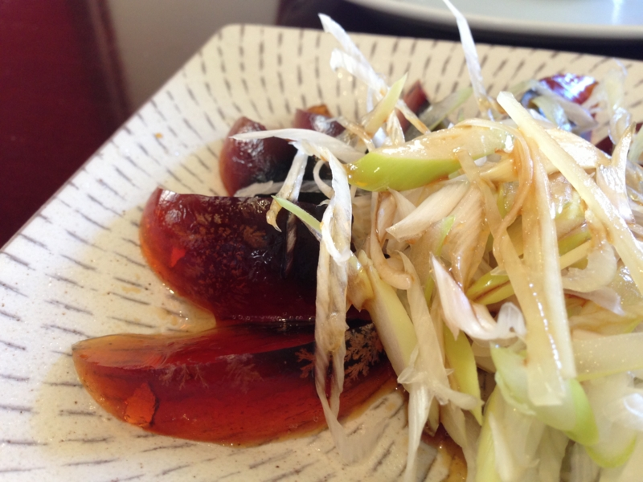

『パシフィック・リム』
公開日：
昨日は @subsfn と一緒に川崎で『パシフィック・リム』を観に行った。
なんか Twitter でやたら耳にするタイトルだったので、観てみたかったんだよね。朝六時に起きて、八時半に川崎へ。
内容は――なんか地球滅亡系＋熱血ロボット系だった。なんか日本のロボットアニメのオマージュっぽいところも随所に感じたけど、気のせいだろうか。決して A 級ではないと思うけれど、最初から B 級と割りきって観に行けば、かなり面白いと思う。上映時間の関係で日本語吹き替えの 3D 版を観たのだけど、2,000円したにもかかわらず、損した気分は全然しなかった。
それにしてもあれやな。なんとなく宮崎駿が素人声優にこだわるのもわからんでもないな。脳内で般若心経を唱えても、あの人の声がシャアの声に聞こえる。林原めぐみの声も特徴的で、実写映画なのになぜかアニメっぽく脳内で再生される、とても不思議な雰囲気を味わった。個人的には（観てはないけれど）字幕版をおすすめしたい。どんなふうに訳されているのか気になるところもあったし。

お昼ごはんは珉珉で中華。ビール三杯飲んで眠くなったので、そのまま帰って昼寝した。